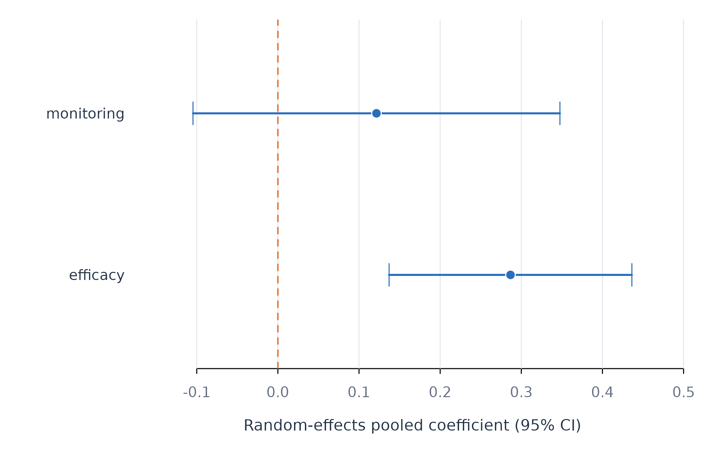

Pooling Person-Specific Coefficients with pool_coefs()
Source:vignettes/pool-coefs.Rmd
pool-coefs.RmdAnalytic question
pool_coefs() estimates the distribution of
person-specific coefficients after accounting for their sampling
uncertainty. The function takes an idiographic_fit with
individual coefficients and standard errors. It returns one tidy row per
term with a pooled estimate, confidence interval, observed coefficient
spread, estimated between-person spread, Cochran’s Q, and I-squared.
pool_coefs() applies a DerSimonian-Laird random-effects
model (DerSimonian
and Laird 1986). Each learner’s coefficient contributes
according to its sampling variance. The estimated tau
describes between-person standard deviation after sampling error is
removed. The observed standard deviation describes the raw spread before
that correction.
Fit individual regressions
fit_lm() supplies the person-specific coefficients and
standard errors that pooling requires. The individual scope fits effort
on efficacy and monitoring for each learner.
individual_fit <- fit_lm(analysis_data, y = "effort", x = c("efficacy", "monitoring"), id = "name", time = "day", scope = "individual")
coefs(individual_fit, scope = "individual", n = 8)
#> scope model estimator subject subgroup term estimate std_error
#> 1 individual lm native Aisha .none (Intercept) 60.8053781 4.48242570
#> 2 individual lm native Aisha .none efficacy 0.2209651 0.08212755
#> 3 individual lm native Aisha .none monitoring 0.1495086 0.06851997
#> 4 individual lm native Alice .none (Intercept) 64.5515532 6.45537709
#> 5 individual lm native Alice .none efficacy 0.4543041 0.07660304
#> 6 individual lm native Alice .none monitoring -0.3276520 0.08001883
#> 7 individual lm native Anika .none (Intercept) 23.1867445 5.98939755
#> 8 individual lm native Anika .none efficacy 0.4923880 0.10132704
#> statistic p_value
#> 1 13.565284 4.720708e-26
#> 2 2.690512 8.143071e-03
#> 3 2.181971 3.104404e-02
#> 4 9.999656 1.589570e-17
#> 5 5.930628 2.933652e-08
#> 6 -4.094686 7.669590e-05
#> 7 3.871298 1.760110e-04
#> 8 4.859394 3.568461e-06coefs() shows that each learner contributes a separate
estimate and standard error in Table 1. Machine-learning coefficients do
not generally carry comparable standard errors, so
pool_coefs() accepts LM, GLM, and within-between results
and rejects unsupported coefficient tables.
Pool the coefficients
pool_coefs() estimates one random-effects summary for
each regression term. Table 2 reports all terms.
pooled_coefs <- pool_coefs(individual_fit)
pooled_coefs
#> POOLED PERSON EFFECTS
#> Method random effects (DerSimonian-Laird)
#> People 12
#> Terms 3
#>
#> term k pooled 95% CI sd_obs tau I2 Q p
#> --------------------------------------------------------------------------------
#> (Intercept) 12 36.1962 [21.50, 50.89] 23.591 20.102 0.912 <1e-04
#> efficacy 12 0.2867 [0.14, 0.44] 0.238 0.197 0.813 <1e-04
#> monitoring 12 0.1215 [-0.10, 0.35] 0.357 0.330 0.938 <1e-04
#>
#> sd_obs = spread you see; tau = spread that is REAL
#> I2 = share of the observed spread that is realpool_coefs() estimates an efficacy coefficient of about
0.29 in Table 2. Its confidence interval excludes zero. The estimated
between-person standard deviation is about 0.20, and I-squared is about
0.81. The monitoring interval includes zero and its I-squared is about
0.94. The panel therefore contains substantial coefficient heterogeneity
even where the pooled mean is uncertain.
Plot the pooled coefficients
The forest plot displays the two substantive pooled slopes and their
confidence intervals. The intercept is omitted because its much larger
scale would compress the predictor effects. Heterogeneity remains
available in Table 2 through tau and I-squared.
shown_pool <- subset(pooled_coefs, term != "(Intercept)")
forest_plot(shown_pool$estimate, shown_pool$conf_low, shown_pool$conf_high,
shown_pool$term, xlab = "Random-effects pooled coefficient (95% CI)")
Figure 1. Random-effects pooled slopes with 95% confidence intervals.
Figure 1 shows a positive pooled efficacy slope and a monitoring interval that crosses zero. These are average slopes, not claims of a common effect. The large I-squared values in Table 2 show why the pooled estimates should be reported together with their between-person heterogeneity.
Assumptions and failure checks
pool_coefs() treats learners as independent units and
assumes that their true coefficients follow a distribution summarized by
a mean and variance. The DerSimonian-Laird estimate can be imprecise
with few people. Q and I-squared should not be read without the number
of contributing learners and the estimated tau.
pool_coefs() requires at least two usable person
estimates for a term. A coefficient with a missing or nonpositive
standard error is excluded. Pooling does not turn an associational
coefficient into a causal effect.
When to use which
pool_coefs() is appropriate for the average and
heterogeneity of person-specific slopes. shrink_coefs() is
appropriate when the objective is to stabilize each learner’s estimate.
fit_lm(scope = "pooled") estimates one row-level pooled
regression and answers a different question from meta-analytic pooling
of individual slopes.